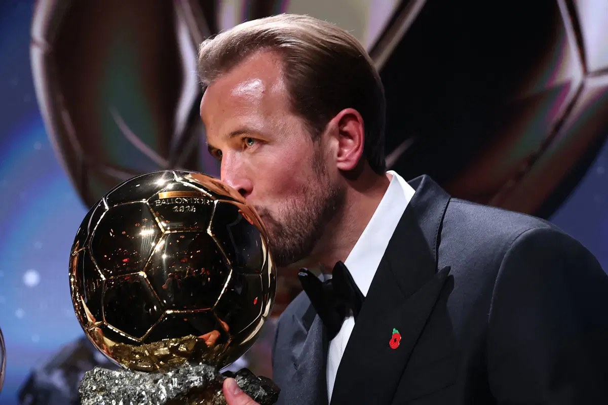

Organisers reveals how Kane edged Mbappe to Ballon d’Or win

Harry Kane won the 2026 Ballon d’Or by 28 points over Kylian Mbappe, the narrowest margin under the award’s current voting system. The voting breakdown, disclosed on Friday, showed Kane finished with 1,055 points, while Mbappe received 1,027.
Kane, the Bayern Munich and England forward, was ranked first by 40 of the 100 jurors. Mbappe, the France captain who plays for Real Madrid, received 23 first-place votes. Kane became the first Englishman to win the men’s award since Michael Owen in 2001.
The previous closest result under the current system was in 2024, when Rodri, then playing for Manchester City, beat Real Madrid’s Vinicius Junior by 41 points. The latest result was considerably tighter than last season’s: Paris Saint-Germain forward Ousmane Dembele earned 1,380 points and finished 321 ahead of Barcelona’s Lamine Yamal.
Yamal placed third in this year’s voting with 881 points, 174 behind Kane. The Ballon d’Or is decided by journalists, with one juror representing each of the top 100 nations in FIFA’s men’s rankings. For the women’s award, the voting panel represents the top 50 nations in the rankings.
Source: Vanguard